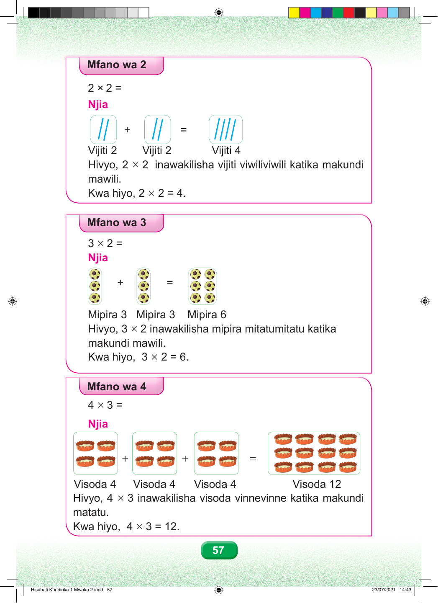

Mfano wa 2 2 × 2 = Njia + = Vijiti 2 Vijiti 2 Vijiti 4 Hivyo, 2 × 2 inawakilisha vijiti viwiliviwili katika makundi mawili. Kwa hiyo, 2 × 2 = 4. Mfano wa 3 3 × 2 = Njia + = Mipira 3 Mipira 3 Mipira 6 Hivyo, 3 × 2 inawakilisha mipira mitatumitatu katika makundi mawili. Kwa hiyo, 3 × 2 = 6. Mfano wa 4 4 × 3 = Njia + + = Visoda 4 Visoda 4 Visoda 4 Visoda 12 Hivyo, 4 × 3 inawakilisha visoda vinnevinne katika makundi matatu. Kwa hiyo, 4 × 3 = 12. 57 Hisabati Kundirika 1 Mwaka 2.indd 57 23/07/2021 14:43